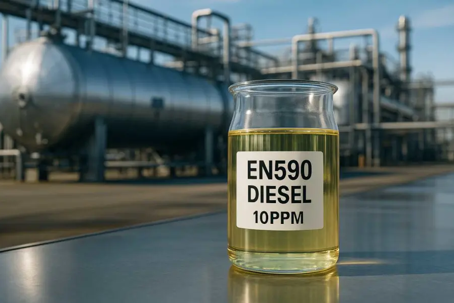

EN590 10ppm Diesel Overview
EN590 10ppm Diesel is a premium ultra-low-sulfur automotive diesel fuel designed to meet the European EN590 standard. It is widely used for modern diesel engines because it supports cleaner combustion, better compatibility with emission-control systems, and reliable performance across transportation and industrial applications.
What It Is
EN590 10ppm Diesel refers to diesel fuel with a maximum sulfur content of 10 parts per million, which makes it a low-emission fuel suitable for today’s stricter environmental requirements. It is commonly described as ultra-low sulfur diesel and is engineered for consistent engine performance, cleaner exhaust output, and improved operational efficiency. This fuel is typically produced to meet key quality parameters such as a cetane number of at least 51, density around 820 to 845 kg/m³ at 15°C, viscosity in the 2.0 to 4.5 mm²/s range at 40°C, and a flash point of 55°C or higher. These specifications help ensure stable ignition, smooth running, and dependable use in modern diesel engines.
Main Benefits
One of the biggest advantages of EN590 10ppm Diesel is its very low sulfur content, which helps reduce harmful emissions and makes it compatible with advanced exhaust after-treatment systems such as DPF and SCR. This is especially important for fleets and operators trying to meet environmental regulations without sacrificing engine reliability. It also offers good combustion quality and efficient engine response thanks to its high cetane rating and controlled viscosity. In practice, that means smoother starts, quieter operation, and better fuel performance in vehicles and equipment that rely on high-grade diesel fuel.
Typical Applications
EN590 10ppm Diesel is used in passenger cars, trucks, buses, agricultural machinery, construction equipment, generators, and certain marine and remote power applications. Its clean-burning profile makes it suitable for operators who need both performance and compliance with emission standards. Because it is a standardized fuel, it is also widely traded in international markets and often specified in bulk supply contracts for transport and energy users. Buyers usually look for clear and bright appearance, low water content, and stable seasonal cold-flow performance when sourcing this grade.
Why Choose It
For commercial buyers, EN590 10ppm Diesel is a practical choice because it combines environmental compliance, strong engine compatibility, and consistent quality control. It is especially valuable for businesses that operate diesel fleets, heavy equipment, or backup power systems and need fuel that performs reliably under demanding conditions.
